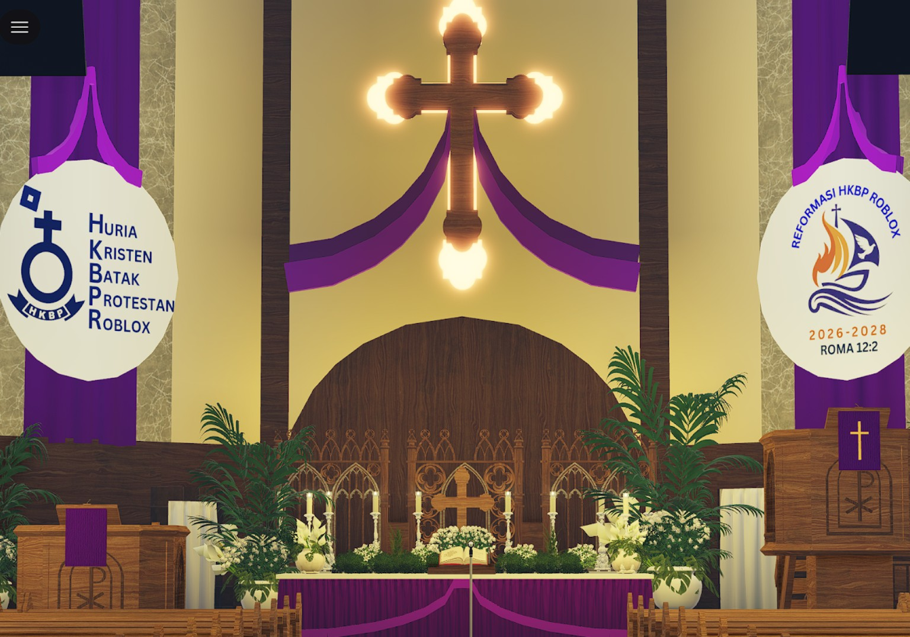
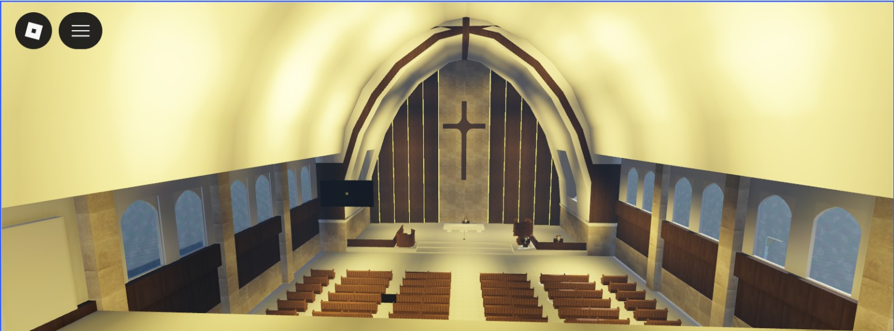
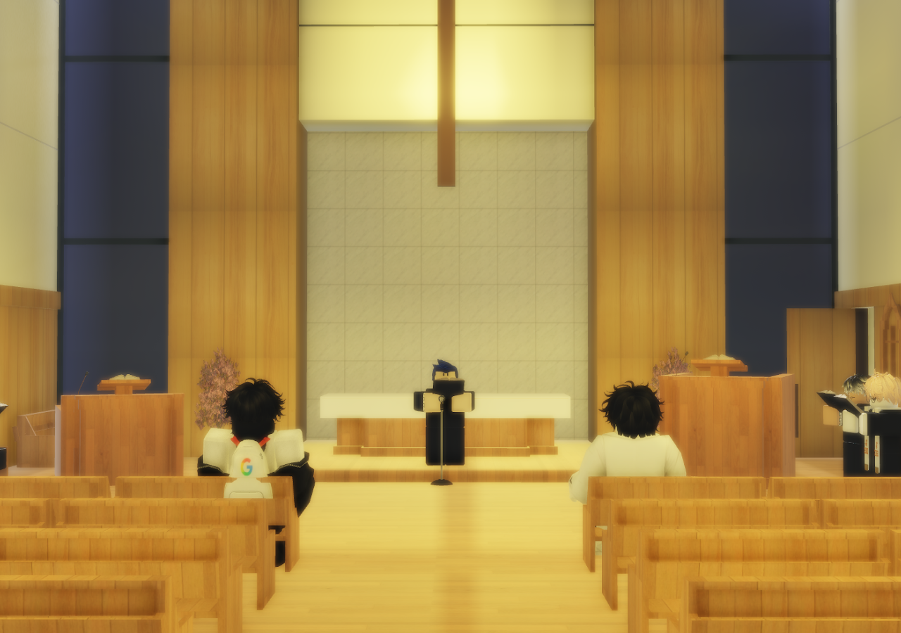

HKBP Roblox (HKBPR) merupakan sebuah komunitas gereja yang berada di dalam platform permainan
Roblox. Komunitas ini dibentuk sebagai tempat berkumpulnya para anggota yang ingin
membangun kebersamaan, pelayanan, serta nilai-nilai kekristenan di dunia virtual.
kami membuka lowongan bagi kamu yang ingin menjadi Pendeta,Sintua,Tim tugas,Saudara/Saudagar,Pengurus
HKBPR berada di bawah naungan komunitas RCC yang merupakan singkatan dari
Roblox Council Churches. RCC adalah sebuah komunitas yang berfokus pada pembangunan
map gereja, kegiatan komunitas, serta pengembangan persekutuan di dalam platform Roblox.
HKBP Roblox Berdiri Pada Tanggal 24 Agustus 2025.
Ibadah pertama dimulai pada tanggal 31 Agustus 2025 yang bertepatan dengan
MINGGU XI SETELAH TRINITATIS.
Ibadah tersebut pertama kali dilayani oleh Ephorus HKBP pertama HKBPR yaitu
Pdt. Scottie Siregar M.Th.
Sejak saat itu komunitas HKBPR terus berkembang dengan berbagai kegiatan ibadah
virtual, pembangunan map gereja HKBP di Roblox, serta pelayanan komunitas bagi
anggota yang ingin bersekutu di dalam dunia digital.
Struktur organisasi HKBPR dibentuk untuk mendukung pelayanan, pengelolaan komunitas,
serta kegiatan ibadah di dalam platform Roblox.
Struktur ini terdiri dari Ephorus, Pendeta, Sintua, Calon Sintua, Calon Pendeta,
serta anggota jemaat yang turut berperan dalam pelayanan dan pengembangan komunitas.
1. HKBP AJIBATA

HKBP Ajibata merupakan salah satu map gereja HKBP yang dibuat oleh komunitas RCC di dalam Roblox.
Map ini terinspirasi dari gereja HKBP Ajibata yang berada di daerah Ajibata, Sumatera Utara.
2. HKBP JATIASIH

HKBP Jatiasih merupakan salah satu map gereja yang juga dibuat oleh RCC di Roblox.
Map ini terinspirasi dari gereja HKBP Jatiasih yang berada di daerah Jatiasih, Bekasi.
3. HKBP TOCHIGI

HKBP Tochigi adalah gereja Huria Kristen Batak Protestan Yang berada di negara Jepang.
HKBPR terinspirasi membuat HKBP Tochigi karena HKBP Tochigi adalah gereja HKBP yang berada di luar negara yaitu Jepang.
Kiranya Tuhan memberkati setiap rumah ibadat.